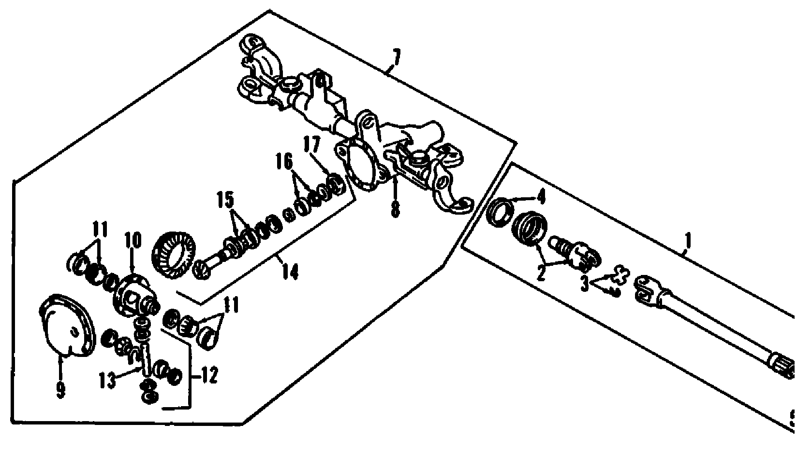
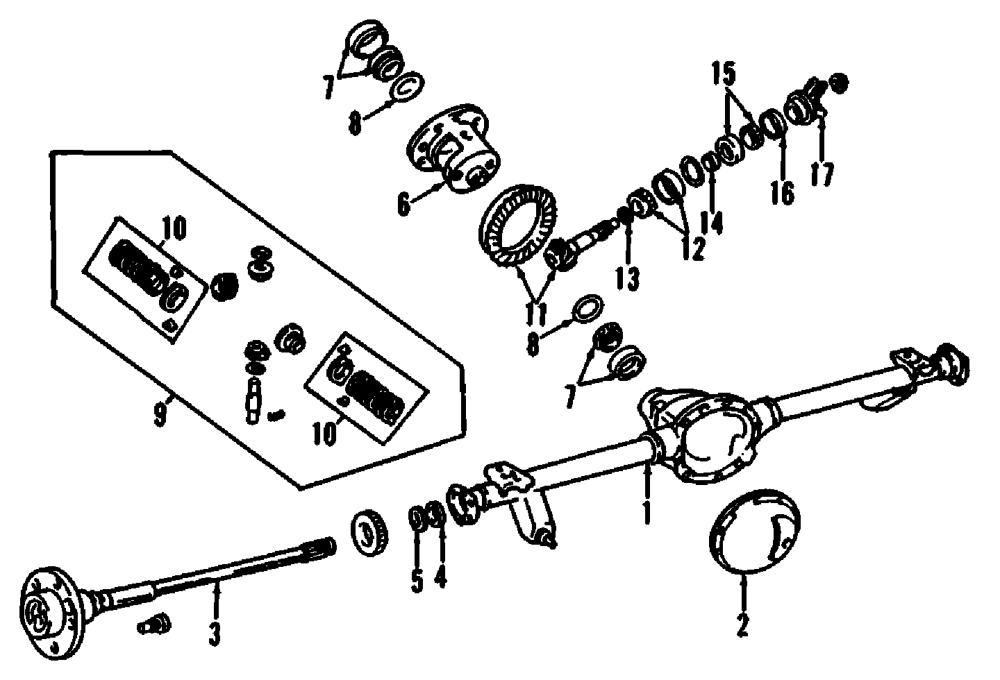
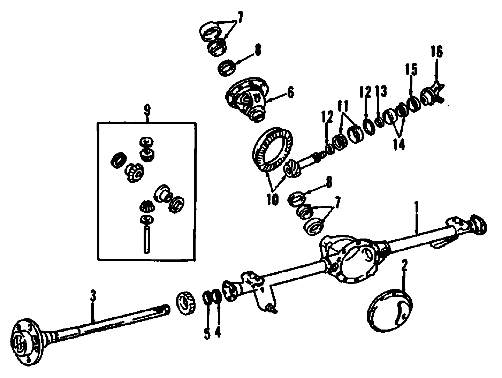

Operation CHARM
: Car repair manuals for everyone.
Русский
Home
>>
Jeep
>>
1997
>>
Grand Cherokee 4WD L6-4.0L VIN S
>>
Parts and Labor
>>
Transmission and Drivetrain
>>
Differential Assembly
>>
Images
Images
5v�nFront Axle:

Rear Axle, Locking:

Rear Axle, Non-Locking:
